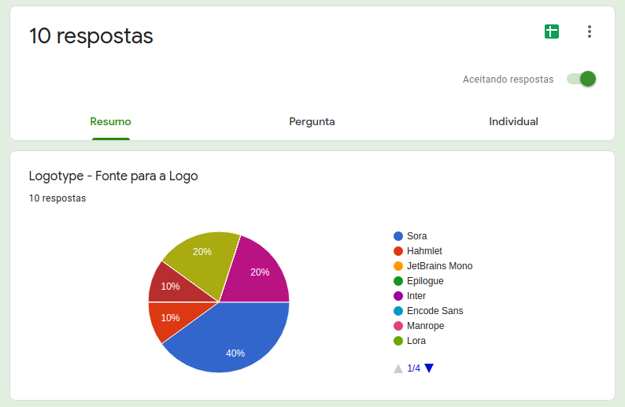
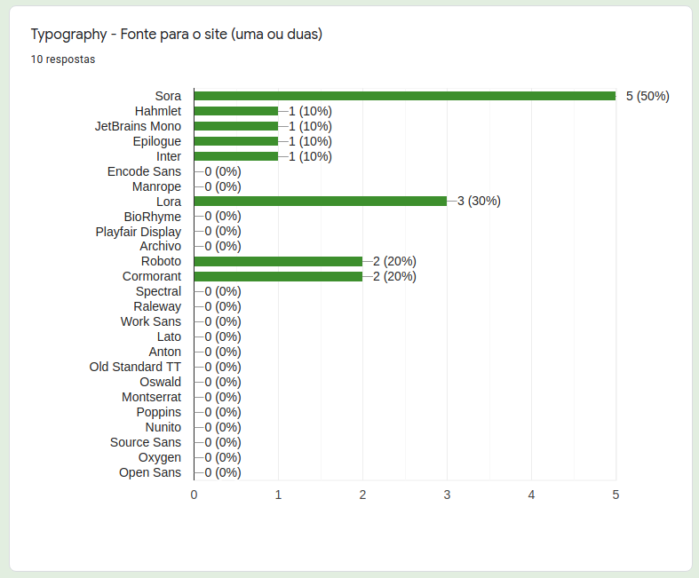
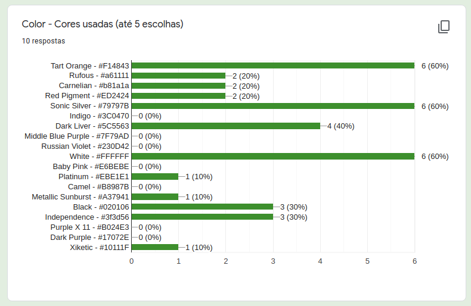

Debate - Identidade Visual
1. Introdução
Documento que mostra as discussões e os resultados para a decisão sobre a Identidade Visual do projeto.
2. Metodologia
Para as definições sobre a identidade visual, foram desenvolvidos alguns protótipos utilizando a ferramenta Figma. Nesse protótipo, foram incluidas fontes disponibilizados por uma matéria do site awwwards. As Cores que compõe o símbolo escolhido para o projeto, e cores similares para ter mais opções para a definição. Após a confecção do protótipo, o grupo realizou uma votação para definição da identidade visual através do do google forms.
3. Protótipo
Link do protótipo, realizado na ferramenta Figma.
Link de visualização do protótipo.
4. Resultados
4.1. Questionários
O questionário representa os tópicos a serem votados e escolhidos como definitivo para a identidade visual.
4.2. Fonte da Logo
A fonte Sora foi escolhida para a Logo e para o uso no website.
Figura 1 - Resultado sobre a fonte da logo, versão 1.0.

Fonte: Site Google Forms
4.2. Fonte da Logo
As fontes escolhidas para o Website foram a Sora e a fonte Lora.
Figura 2 - Resultado sobre as fontes para o site, versão 1.0.

Fonte: Site Google Forms
4.3. Cores
Foram escolhidas 5 cores para fazerem parte da identidade visual. A cor que recebeu a maior votação foi trocada por outra para atender questões de estética visual, assim a cor "Dark Liver" foi trocada por "Independence".
Figura 3 - Resultado sobre as fontes para o site, versão 1.0.

Fonte: Site Google Forms
| Cor | Nome | RGB | CMYK | WEB |
|---|---|---|---|---|
 |
Tart Orange | 241, 72, 67 | 0, 70, 72, 5 | #F14843 |
 |
Sonic Silver | 121, 121, 123 | 2, 2, 0, 52 | #79797B |
 |
White | 255, 255, 255 | 0, 0, 0, 0 | #FFFFFF |
 |
Black | 2, 1, 6 | 67, 83, 0, 98 | #020106 |
 |
Independence | 63, 61, 86 | 27, 29, 0, 66 | #3f3d56 |
4.4. Participantes
Todos os membros da equipe participaram da equete sobre a Identidade Visual.
Figura 4 - Participantes da enquete, versão 1.0.
Fonte: Site Google Forms
5. Referências
-
awwwards: 20 Best Google Web Fonts, acessado dia 18 de agosto de 2021.
-
awwwards: The awards of design, creativity and innovation on the internet, acessado dia 18 de agosto de 2021.
-
Coolors: Create the perfect palette or get inspired by thousands of beautiful color schemes., acessado dia 18 de agosto de 2021.
-
Fonts Google: Font Lora, designed by Cyreal, acessado dia 18 de agosto de 2021.
-
Fonts Google: Font Sora, designed by Jonathan Barnbrook, Julián Moncada, acessado dia 18 de agosto de 2021.
-
Google Forms: Crie lindos formulários, acessado dia 18 de agosto de 2021.
-
Figma: the collaborative interface design tool., acessado dia 18 de agosto de 2021.
6. Versionamento
| Data | Versão | Descrição | Autor(es) |
|---|---|---|---|
| 18/08/2021 | 1.0 | Criação do documento | Tomás Veloso |
| 18/08/2021 | 1.1 | Debate e escolha da identidade visual | Todos os membros |